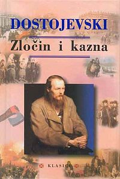
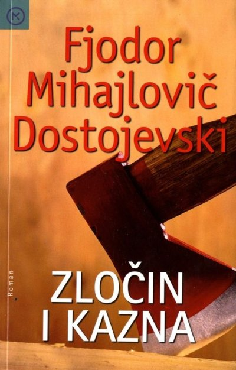
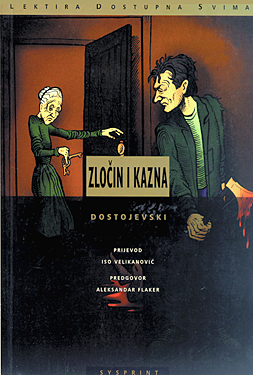

 
Sveučilište Josipa Jurja Strossmayera Osijek
Sadržaj
O autoru
Kratki sadržaj
Gdje knjigu možete kupiti
Fjodor Mihajlovič Dostojevski (1821.-1881.) ukrajinski ruski je romanopisac i uz Tolstoja najveći predstavnik ruskog realizma.
Presudnu je ulogu u njegovu životu i stvaranju imalo sudjelovanje u utopijsko-socijalističkom kružoku Petraševskoga, zbog čega je 1849. bio osuđen na smrt, zatim pomilovan i prognan u Sibir gdje je proveo deset godina.
Glavni je junak romana siromašan student prava Rodion Raskoljnjikov. Raskoljnjikova progoni ideja o izvršenju “više pravde” koju će ostvariti ubojstvom Aljone Ivanove, gramzive i podle stare lihvarice čijim bi se novcem moglo usrećiti barem sto ljudi i čijim bi nestankom bili zadovoljni mnogi, uključujući i njenu sestru Lizavetu koju Aljona muči i iskorištava.
Raskoljnjikov pomno razrađuje i provjerava plan iako dio njega ne vjeruje u izvršenje plana, ali sklop životnih okolnosti naprosto gura Raskoljnjikova u zločin. On dobiva majčino pismo, razgovara u krčmi s Marmeladovim, susreću Sonju, doznaje da će lihvarica biti sama oko sedam sati. Majčino pismo puno je nemoćne pomirenosti sa životom. Sestra Dunja obećala je ruku bogatom Lužinu koji traži siromašnu djevojku da bi mu bila pokorna i zahvalna da bi se spasila sramne i ponižavajuće guvernantske službe kod razvratnika. Mati se nada da će tako materijalno pomoći sinu jer je sestra strpljivo podnosila teror Svidrigajlova vezana obvezom vraćanja posuđenog novca za Rodionovo školovanje.
Raskoljnjikov ne može prihvatiti sestrinu žrtvu. Teško opterećen time u krčmi susreće propalog alkoholičara Marmeladova koji utapa tugu pićem kupljenim novcem koji zarađuje starija kći Sonja prostituirajući se. Raskoljnjikov upoznaje obitelj Marmeladovih čija sudbina pokazuje pogubnost djelovanja bijede na ljudski rod. Najveći je stradalnik Sonja, ali ona im pruža najveće nade. Ostat će moralno čista uz sva zla koja je zadese u životu. Raskoljnjikov gotovo podsvjesno donosi odluku te pada u san ispunjen košmarima. Kao da je upravljan nečim izvan svijesti, pomno i hladno ostvaruje svoj plan. Prisustvo Lizavete koje je bilo nepredviđena okolnost, rješava brutalno, ubija je zajedno sa sestrom. Opljačkan novac skriva pod kamen ne brojeći ga. Vraća se u stan i pada u groznicu.

Knjiga se može kupiti u mnogim Online trgovinama, a neke od njih su: ekupi , Super knjižara , te u knjižarama Profil, Algoritam i Mozaik.
Fjodor Mihajlovič Dostojevski je rekao:
Apstraktno čovjek nekako i može voljeti bližnjeg, ili čak neki put iz daleka, ali iz bliza skoro nikad.
Ako pri svakoj prijateljskoj usluzi odmah misliš na zahvalnost, onda nisi darovao, već prodao.1
1Fjodor Mihajlovič Dostojevski
Desing by Diana